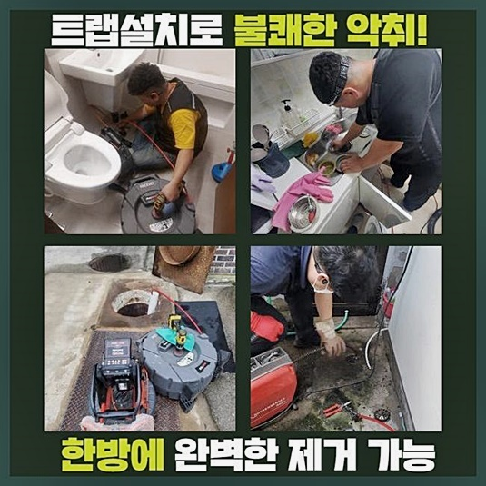
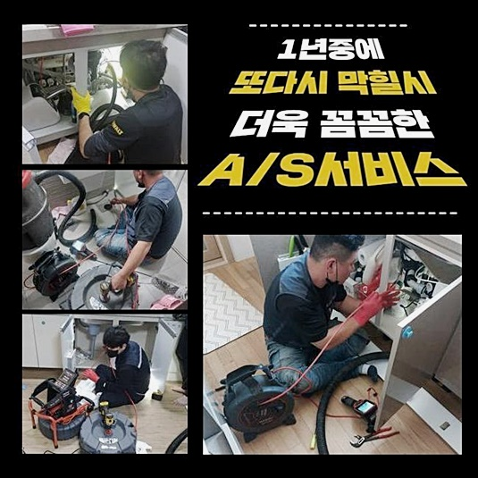
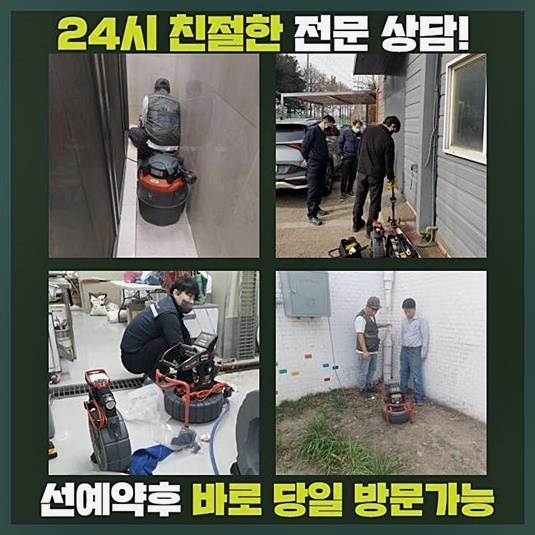
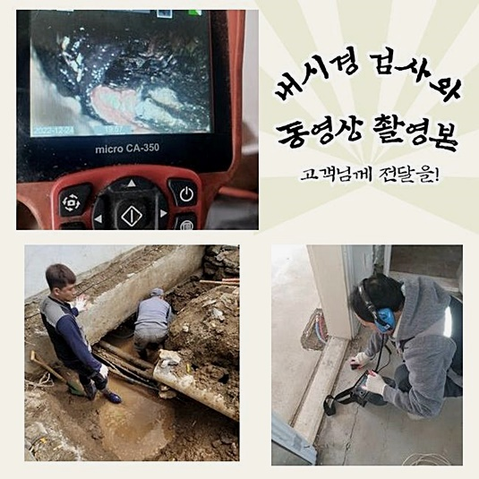
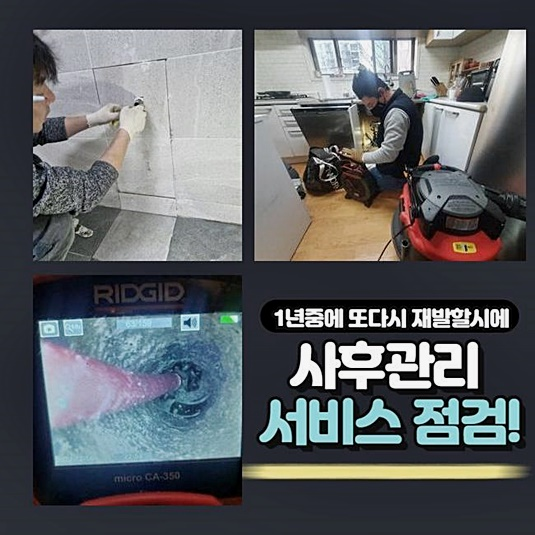
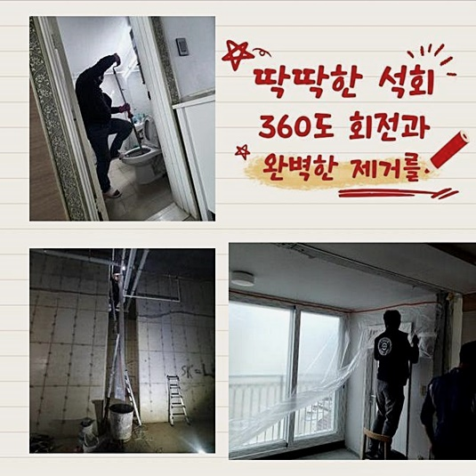
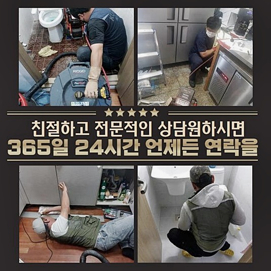

🏠 성남 태평동화장실역류 고등동 배관전문
용인시 처인구 배관막힘 전문 시공 후기

📋 작업 개요
- 위치: 용인시 처인구, 수원시 영통구, 화성시 동탄
- 서비스 유형: 배관막힘, 하수구청소, 배관수리, 내시경점검
- 작업 일시:
- 업체명: 하수구수사대 (010-5615-2118)
🔍 문제 상황
성남 태평동화장실역류 고등동 배관전문
하루를 보내시다가 당황스럽게 하수구가 봉쇄되는 사건이 나면 일상 루틴이 불가능합니다
오늘의 포스팅에서는 하수 파이프가 불능일 때 대처해야 할 방안에 대해 전달드리도록 할테니 새겨 보시기 바랍니다
식재료를 다루는 부엌에서 결함이 발견되면 그날부터 간소화된 조리음식도 제 시간에 먹지 못하니 에너지원이 고갈되어 버리죠
게다가 오염된 하수가 역행하여 구린내까지 스믈스믈 흘러나오면 한시라도 빠르게 막힘을 고치려고 애씁니다
냉정하게 말해 저희는 혼자서 하수구 청소를 말끔하게 끝내는 것은 사실상 어렵다고 알려드릴 수 있겠습니다
게다가 역행이 생긴 상태일 경우는 아마도 하수관 영역에 기름진 부산물들이 결합되었을테니 고도화된 기계를 접목해야 하는 일이 빈번히 일어납니다
보고 계시는 막힘을 개선시킨 현장 역시 다를 바가 없었습니다
주방에 오염된 하수가 터져나오고 냄새까지도 풍겨서 난리통이라고 전하셨어요
다급한 마음으로 용해제와 철 막대로 개인적 도전을 해보셨지만 압박 받은 하수가 치솟다보니 하단장의 아래에 물이 흥건하게 고인 모습이라 한 시가 급하다 하셨어요
알려주신 작업장에 가서 조사해 보았더니 역시나 참혹한 상태였고 내부의 오수에 추가로 속에 있는 오염원까지 함께 솟아올라서 인지 하수구 냄새도 엄청나더라고요

🔎 원인 분석
💡 전문가 진단: 정밀 진단 장비를 사용하여 슬러지의 고착 여부를 판명하고 타격/세척 작업을 실시했습니다.
드러나는 쪽을 보면서 상태를 점검했는데 천만다행으로 하부 주름 배수관에는 더 이상의 파손은 일어나지 않은 상태였습니다
스스로 극복하려 하시는 중에 배관이 파손되는 일이 상상 이상으로 흔합니다
간결한 상황 검토를 완성했으면 하부장 하단부의 통로에다 배관 청소기를 넣어서 핵심 과제인 막힘 작업에 착수했습니다
이 장치는 건식 스타일이 아니라 습기도 처리되는 장치다 보니 파이프 안을 모두 털어내고 청소에 들어갈 수 있습니다
높은 수압으로 고여있던 잔여 수분을 소거하며 불순물도 함께 정화되는 사례도 보곤 합니다
강한 진공력을 통해 물을 빨아 올렸지만 오염통에서 별도의 건더기로 뚜렷하게 인식되는 것은 없었어요
일차적으로 하수를 제거해 버렸으니 다음은 내부에 내시경을 도입하여 하수구의 컨디션 점검을 실시했습니다
내시경은 기계의 헤드에 렌즈가 매달려 있어서 어두컴컴하게 막힌 파이프 라인이라도 거침없이 구석구석 살펴볼 수 있어요
모니터에서 드러나는 불그스름한 요소들이 기름 성분인데 기름끼리 접착된 슬러지가 붙어있는 더럽혀진 이미지가 표출되었어요
더 내부에 이르도록 장비를 보내보니 거대하게 뭉쳐있는 슬러지가 떡하니 있었어요
물이 빠지는 통로가 비좁아진게 아니고 가득 차올라 있던 오염원이 있었더라고요
배관막힘의 제대로 된 근원부를 발견했으니 고객님께 문제 지점을 비롯한 해결 전략을 소개하고 청소하기 시작하면 됩니다

🔧 작업 과정
호스를 위로 당겨서 촬영 기기를 수거해서 봤더니 곳곳에 슬러지 덩어리가 배어 나와서 유해한 냄새기 진하게 몰아쳤네요
오염의 정도가 심했다는 것이니 짐작하건대 평상시에 해충이 기어나왔던가 반복되는 냄새 문제로 말못 할 고민이 많으셨을겁니다
청결히 파이프 속을 청결 관리를 한다면 기타 부가적 현상들도 누그러뜨릴 수 있습니다
두텁게 붙은 슬러지를 말끔히 정리한 뒤 카메라를 하수관에 도달시켜서 집중할 영역으로 향했습니다
포장비닐이나 청소 솔같은 고형물이 머무른다면 휘감아서 올리는 접근법으로 정돈을 했겠지만 슬러지가 머물러 있었으니 고기능의 플렉스샤프트 장치의 힘을 빌려야 하는 상황이었어요
이 샤프트는 배관 속에 굳어있는 기름기나 노폐물을 걷어올리거나 분쇄해서 꺼내기 쉽게 만드는데 편리성을 제공합니다
헤드에 연결하는 부속이 강한 쇠사슬처럼 강인하기에 찐득한 슬러지를 쪼개는 작용도 비교 불가능하게 좋습니다
집안 주방에서의 막힘 동기가 기름기라고 판단되면 믿음으로 애용하는 맞춤 기기라해도 과언이 아닙니다
내시경을 넣어서 배관 흐름이 정지된 지점을 빛을 비추어가며 차례대로 내부 질서를 잡았습니다
큰 덩어리를 소단위로 나누며 파쇄하게 잘게 나누고 습식청소기를 번갈아가며 운용하여 빨아들임으로써 정리하며 쾌적한 내부를 조성했습니다
작게 조각난 오염원을 아래로 흘려보내면 심부에 저축되어 수습이 어려운 차단 요소가 빚어질 가능성도 무시못하니 흩어진 파편은 석션기로 하나하나 청소하는 과정도 수행하고 있어요
건축물의 공용 개념인 광대한 배수 구조물에 막히는 낌새가 있다면 작업량이 어마어마하니 압력을 써서 밀어내는 기법을 이용합니다
좁은 배수로에서 막힘이 출현한 곳이라면 명확히 발굴한 원인을 소거하는 것에 우선 순위를 두어서 전문 청소를 임하고 있어요
다소 번거로운 일이지만 철저하게 하수구 내측을 청소해 준다면 같은 사안으로 시간 낭비하지 않아도 됩니다
작업을 진행하는 당일에 책임지고 수행해서 막힌 대상과 재발 가능성까지 전적으로 책임지는게 하수구 정비 팀의 할당량인 것입니다
주방 배관 청소작업을 말끔히 처리한 이후에 안쪽 상황이 잘 개통된 상황을 감지하게 됐어요
붉은 빛이 흔적도 없도록 전적으로 들어냈으니 유사한 차단 현상이 재발할 위험성이 현저히 낮을겁니다
영상으로는 잘 처리된듯 했지만 기능상도 괜찮나 보려고 통수테스트를 걸었어요
미처 처리하지 못한 오작동이나 막힘 기점이 존재할 수 있으므로 대용량의 물을 일시에 내려보냈습니다


✅ 작업 완료
다행이도 시원하고 거침없이 배수되는 모습이어서 시공이 잘됐음을 재차 체크했어요
아무 생각없이 뚫다가는 파손으로 심각한 사태가 작용할 수 있으니 배관 수리 전문가를 수소문하여 서비스를 요청해서 장애물을 극복하시기를 알려드리고 싶습니다
막힘은 방치할수록 심해지니 스케줄을 잡아주신다면 최대한 빨리 찾아뵐 수 있기 때문에 안심하고 전화주시면 됩니다
더불어 투명한 가격 정산으로 경제적인 고충도 적극적으로 낮춰드리려 노력하니 이것저것 고민 없이 의뢰를 맡겨주시면 얼른 방문 후 고쳐드릴게요
노하우와 정보력을 필두로 청결한 배관 정화작업을 도맡아 드리겠습니다




⚠️ 하수구 배관 막힘 예방 및 관리 가이드
- ✅ 머리카락, 비닐, 물티슈 등 물에 분해되지 않는 이물질은 절대 흘려보내지 마세요.
- ✅ 기름기 많은 식기는 설거지 전 키친타올로 먼저 기름때를 닦아내세요.
- ✅ 주기적으로 배수구에 뜨거운 물을 가득 부어주어 유지방 고착을 방지하세요.
- ✅ 작업 후 1년 이내 재발 시 무상 A/S 보증 서비스를 제공합니다.
💡 핵심 정리
- 확실한 장비 작업(내시경 점검 및 샤프트 스케일링)으로 원인을 뿌리 뽑습니다.
- 작업 후 1년 이내에 동일한 부위 재발 시 100% 무상 A/S 서비스를 보장합니다.
- 서울 · 경기 · 인천 전 지역에 24시간 언제든 긴급 출동할 수 있도록 항시 대기 중입니다.
❓ 자주 묻는 질문 (FAQ)
🚨 용인시 처인구 배관막힘 문제로 고민이신가요?
정확한 원인 진단과 확실한 시공으로 재발 없는 해결을 약속드립니다.
24시간 긴급 출동 | 서울 · 경기 · 인천 전지역 | 1년 내 재발 시 무상 A/S